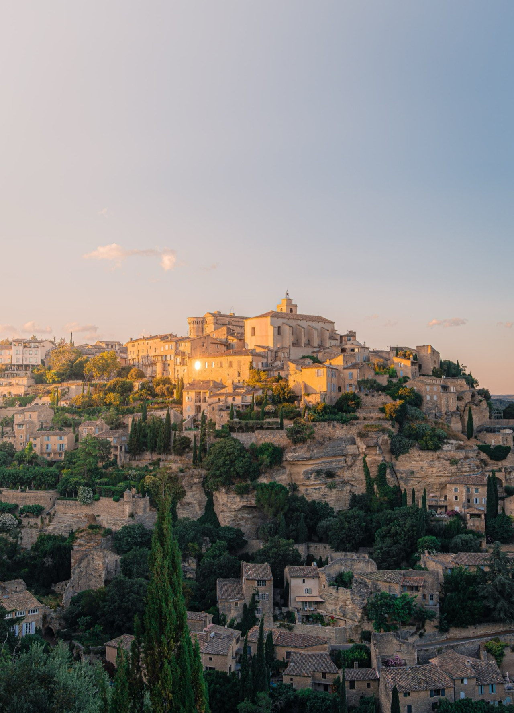
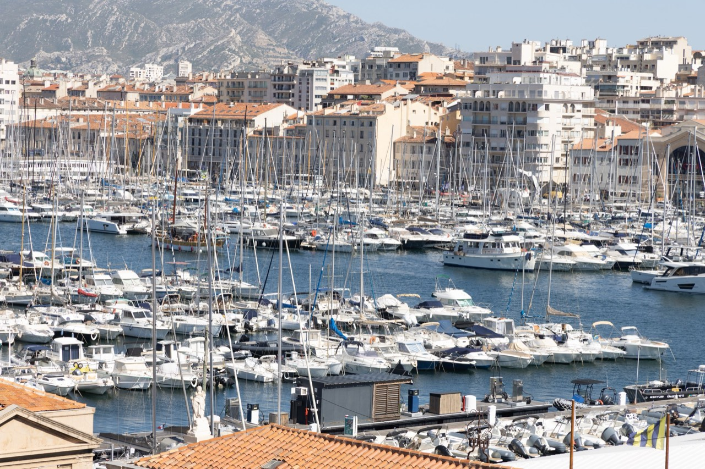
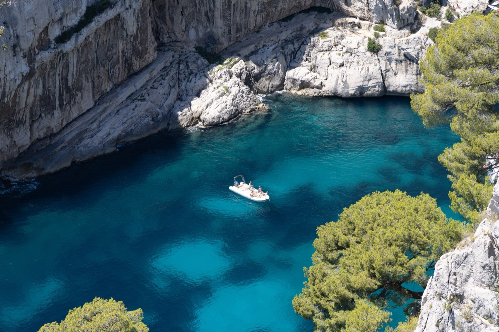

France
The South of France in high summer.
2026.7
Photographs




The guide for this country is not written yet.
Back to destinationsThe South of France in high summer.
2026.7



The guide for this country is not written yet.
Back to destinations